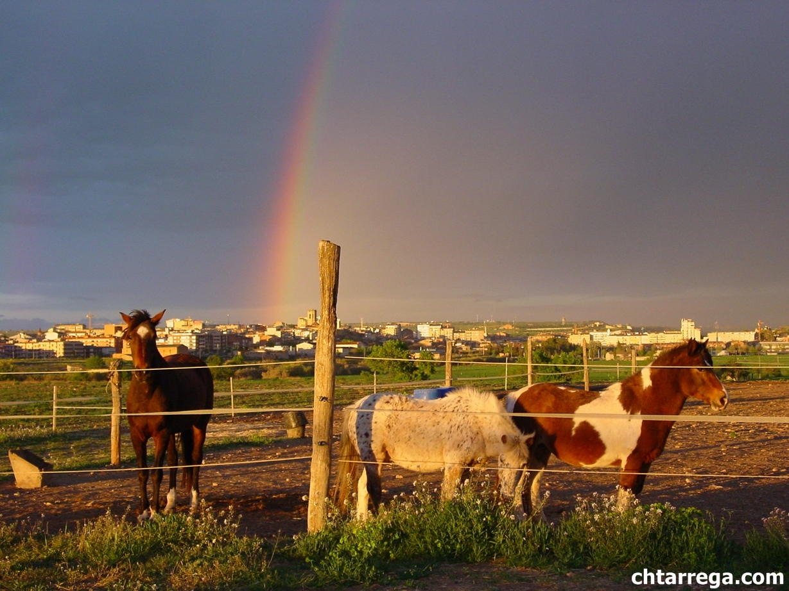
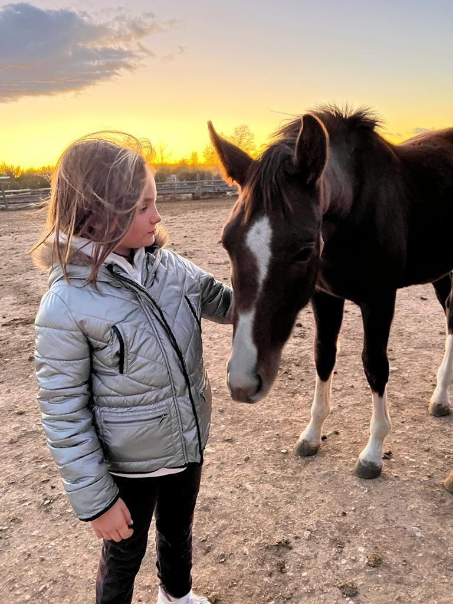
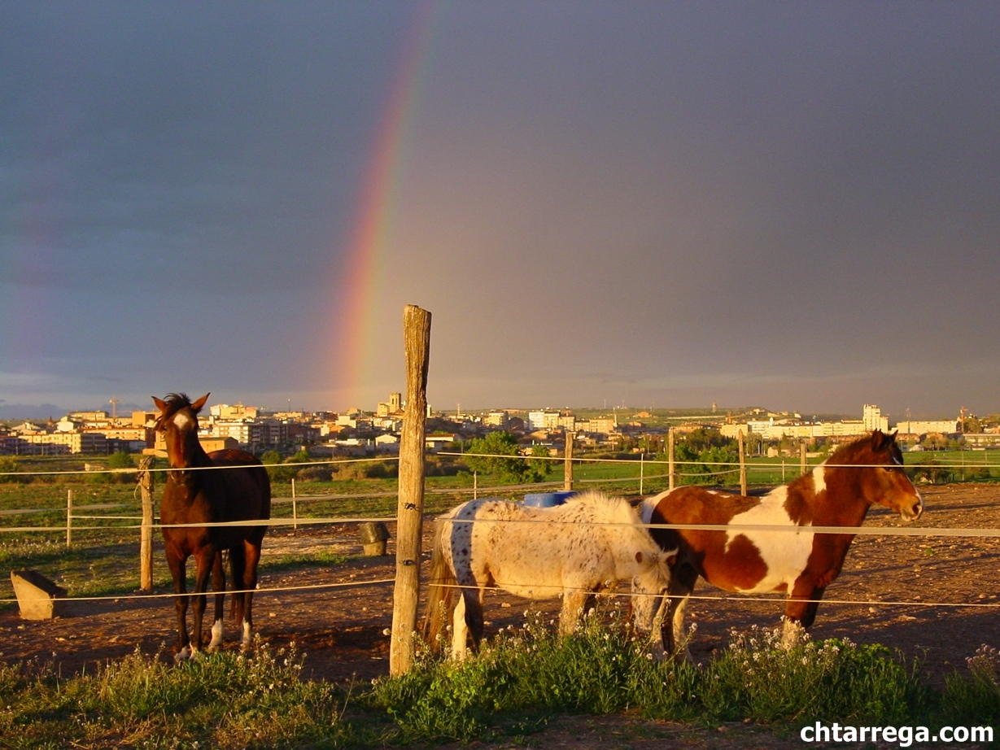
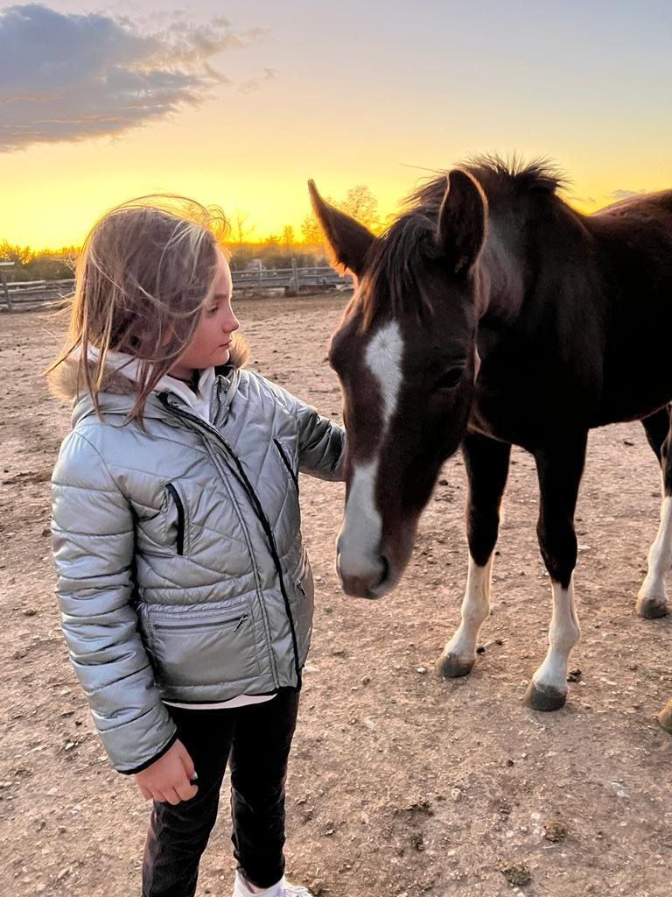

SERVEIS
Treballem per oferir experiències completes i de qualitat al voltant del món del cavall. Amb un entorn acollidor, un equip professional i una filosofia basada en el respecte pels animals, els nostres serveis s'adapten a totes les edats i nivells per gaudir, aprendre i créixer.
Escola d'equitació
El principal objectiu de l'escola és la formació.
Par a tal objectiu es disposa de professional
degudament preparat i format per tal d'aconseguir que els joves s'introdueixin en el coneixement
del món equí amb les màximes garanties de seguretat i disfrut per part dels inscrits en els cursos
que es duen a terme durant tot l'any.
Es pot participar de forma adequada en classes individuals i col·lectives
(consultar tarifes). Per a tal finalitat l'escola disposa de diferents cavalls i ponis adaptats a qualsevol alumne
a partir de 4 anys sense límit d'edat. Existeixen diversos nivells d'acord amb l'experiència del genet i l'edat.
Des de classes d'iniciació, a doma, salt o qualsevol disciplina que es vulgui practicar. Ja sigui a nivell
esportiu o competitiu.
Pupil·latge
El centre ofereix servei de pupil·latge en box o en semillibertat (100 metres al descobert i cobert de 20 metres).
Festes d'aniversari i festes familiars
Disposem d'un espai únic per a fer de la teva festa un esdeveniment únic.
Activitats amb ponis, carret i boti.
Clica per a més informació
Entrenament de cavalls
El personal de centre ofereix l'oportunitat de millorar el rendiment del seu cavall per la competició o de corregir problemes en la monta.
Visites per a escoles
Passa un dia amb els nostres cavalls, ponis, ruquets fens les activitats diàries,
donar menjar, respatllar, muntar... a més a més fem un taller de ferradures i jocs.
Clica per a més informació
Preparació i examens de Galops 1 al 7
Acompanyem i assessorem tant en la compra com en la venda de cavalls, ajudant a trobar l'animal més adequat segons les necessitats i objectius del genet.
Assessorament per la compra o venda de cavalls
Oferim formació completa i personalitzada per a la preparació dels exàmens oficials de Galops, des del nivell 1 fins al 7. Aquests exàmens acrediten el coneixement i les habilitats eqüestres, tant en la pràctica de l'equitació com en la teoria, seguint el programa establert per la Federació Hípica.
Equitació terapèutica
L'equitació terapèutica és una modalitat dintervenció en la qual s'aprofita el cavall i tot el seu entorn com a eina de treball i està dissenyat i implementat per especialistes. Gràcies al cavall com a nexe d'unió entre el terapeuta i l'usuari, d'una manera tant natural i amb un ambient lúdic i recreatiu, s'orgeix una millor implicació de l'usuari en el procés terapèutic.
- Motivador per l'equip i persones que participen a les sessions.
- Beneficis físics i psicomotrius derivats de la monta i ativitats eqüestres
- Estimula el nivell sensorial, psíquic i sobretot emocional.
- Permet estar en entorns saludables a la natura.
- Partim de l'admiracó i el respecte cap a aquests essers vius.
- S'utilitzen els principis de l'equitació per poder assolir els objectius proposats segons les necessitats de cada usuari.
.jpg) 


